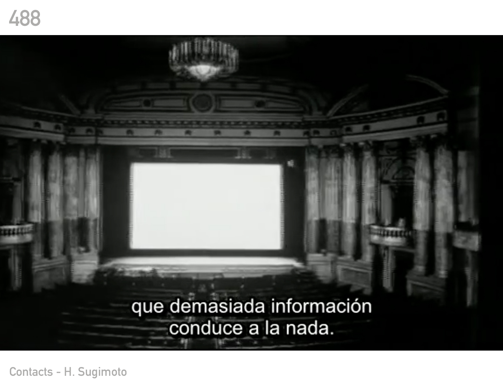
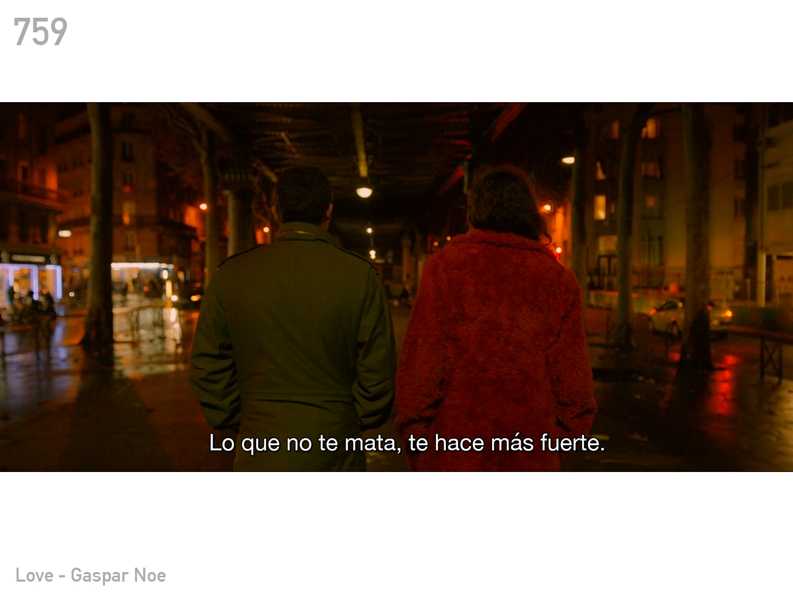

El Azar en el Arte
Bienvenidos a la obra virtual que todos querrán consultar cada
mañana, antes de tomar un mate o leer las noticias. En tiempos de
pandemia nada es casualidad. En realidad, en ningún tiempo las cosas
suceden por casualidad, pero parece ser que el Covid-19 ha
desencadenado una serie de encuentros que de casuales no tienen
nada. Es que internet, con todas sus posibilidades, permitió que
Árida se encuentre virtualmente con Coni Rosman y su proyecto El
Oráculo de las Capturas de Pantalla - a partir de ahora, OCP.
Coni Rosman
vive en Buenos Aires. Es Licenciada en Bellas Artes y fotógrafa
desde siempre. De hecho, la fotografía es su gran compañera y tiene
la suerte de que ahora sea su oficio y su profesión. Su vínculo con
la imagen es muy primitivo, se autodefine como -ñoña- y siempre le
gustó el cine.
¿Cómo empezó el OCP?
El OCP comenzó en diciembre del año 2017. Es una obra virtual,
online e interactiva que conjuga todo ese mundo fantástico que rodea
a Coni, con nada más y nada menos que Internet, ese lugar fabuloso
en el que nadie entiende nada pero donde sucede todo. Está inspirado
en el I–Ching, libro oracular chino, conocido como el libro de las
mutaciones, para poder comprender quiénes somos y a dónde vamos. El
OCP retoma la tradición del oráculo, sitio al que se acude para
obtener una respuesta elevada en sintonía con el momento que
atraviesa cada consultante, pero en este oráculo 2.0, ese sitio es
internet y las respuestas provienen de una colección de capturas de
pantalla de series, películas y documentales. “Yo venía con muchas
preguntas por ese tiempo y el Oráculo de las Capturas de Pantalla
reúne muchos intereses vinculados a la búsqueda de esas respuestas,
a muchos hobbies que yo tenía, más allá de la fotografía y mis
intereses con las imágenes; también intereses relacionados con la
sincronía, la magia, lo oracular”. La creación del OCP nace en un
contexto muy particular. Coni trabajaba para otras personas, siempre
en el mundo fotográfico, y comenzó a cuestionarse el sentido de
seguir produciendo imágenes. ¿Es posible redefinir todas aquellas
imágenes que ya están hechas? ¿Encontrarles nuevos sentidos?
¿Detenerse a pensar qué significan y por qué están en el mundo?. Así
es como, la postfotografía y todas sus posibilidades, invadieron su
práctica. “La búsqueda y la creación del OCP llegó en un momento en
el que mi vínculo con la fotografía estaba con signos de preguntas.
Empecé a trabajar con el archivo fotográfico y con la idea de dejar
de producir imágenes y empezar a darle sentido a las que ya están
hechas. Estamos rodeados de imágenes todo el tiempo. Es hora de ver
qué hacemos con ellas. Entregarles nuevos significados, pensarlas
desde nuevos lugares.” De esta forma, empezó a trabajar sobre la
curaduría de imágenes ajenas y digamos que eso es lo que hace en el
OCP: redefinir discursos de imágenes de distintas procedencias y
autores, de capturas que pertenecen a un contexto específico. La
cantidad de capturas es infinita. Coni alimenta el sitio con
imágenes de su colección personal pero los usuarios también pueden
hacerlo. Todos los aportes de los visitantes, pasan siempre por el
ojo de Coni, quien selecciona cuidadosamente las imágenes, siguiendo
la regla general de que deben tratarse de capturas con subtítulos
vinculados a temas universales. Es importante que entre el resultado
otorgado por el oráculo y la gente que consulta, haya un diálogo.
Las capturas deben funcionar como respuestas y tener una vueltita de
rosca, que no sólo vayan por el sí o por el no. Que hagan que el
usuario pueda seguir preguntádose. Las famosas preguntas
existenciales, de temas existenciales y vivencias existenciales.
Poca cosa ¿no?.


¿Es posible redefinir todas aquellas imágenes que ya están hechas?
“Lo divertido de esta curaduría que hago es que al sacar de contexto
la captura, le doy un nuevo significado. Porque si el usuario vio la
película le va a resonar algo o, quizás, lo lleve a ese momento de
su vida cuando pudo ver la peli; y si no la vio, le genera algo
nuevo y lo inserta en un relato nuevo y seguramente, después, esa
persona vaya a verla y se predisponga de otra forma. Una misma
captura puede tener miles de significados de acuerdo a quien le
toca.” Es imposible definir en qué disciplinas trabaja el OCP. Se
puede decir que no sólo es una maravillosa obra de arte que vincula
la fotografía con el cine y lo interactivo y que, además, está al
alcance de todos, sino que puede utilizarse como tarot o como
herramienta de azar, en el proceso creativo o en la vida misma. Es
que, además, la situación de confinamiento permitió reivindicar y
despertar todos los proyectos que están en internet y digamos que
comenzaron a producir sentido desde lugares nuevos y mucho más
significativos. En el caso del OCP, la construcción azarosa da
espacio a un mundo maravilloso por descubrir. “Es importante
incorporar el azar en el proceso creativo. Hay que confiar en esos
detalles sutiles que te da lo azaroso. Prestarle atención a las
sincronías que se manifiestan en esos espacios pequeños, diminutos,
sutiles, porque es ahí donde encontramos las mejores señales.” Están
todos invitados a recorrer el mundo del Oráculo de las Capturas de
Pantalla de Coni Rosman, a colaborar con su colección y a entregarse
al fabuloso universo del azar, para descubrir que, en definitiva, no
controlamos nada. Por suerte.